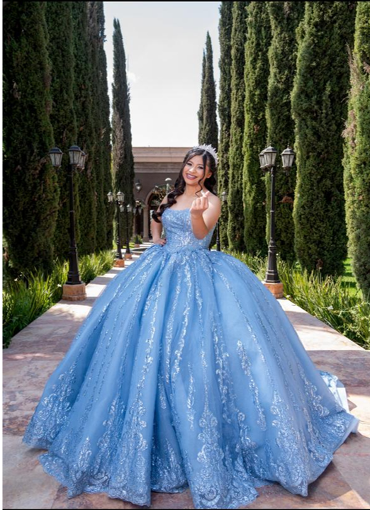

Valeria XV
¡Faltan 7 días!
Y como queremos que disfrutes al máximo este día te mando algunas recomendaciones:
- Recuerda llevar algo para abrigarte
- Zapatos cómodos para bailar
- ¡Traer tu mejor sonrisa y actitud para divertirnos!
Misa: Samara
Recepción: G&G
V